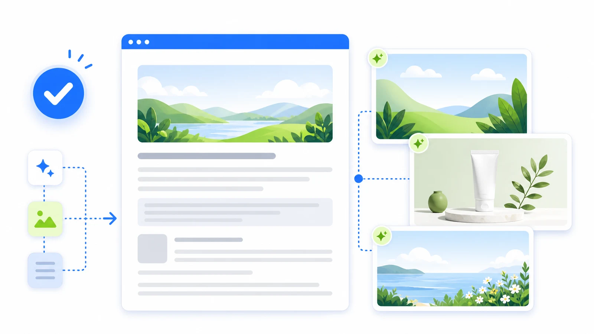

안녕하세요. Blog Hub v2.4 업데이트 소식을 전해드립니다. 이번 업데이트는 실제 운영 환경에서의 검증을 거쳐, 사용자의 편의성을 높이고 전반적인 작업 효율을 개선하는 데 중점을 두었습니다. 주요 변경 사항을 안내해 드립니다.
직관적으로 개편된 AI 작성 순서
기존 버전에서는 블로그 글을 작성하기 위한 초기 설정 과정이 다소 복잡하게 느껴질 수 있었습니다. 이번 v2.4 업데이트에서는 개발이나 IT에 익숙하지 않은 비전공자 사용자도 쉽게 이해하고 사용할 수 있도록 AI 작성 순서를 전면 개편했습니다. 사용자는 복잡한 설정 화면을 거치지 않고, 안내되는 흐름에 따라 자연스럽게 텍스트를 입력하며 글을 완성해 나갈 수 있습니다. 이를 통해 초기 진입 장벽을 낮추고 더 직관적인 사용자 경험을 제공합니다.
첫 초안 직후 이미지 병행 생성 기능
콘텐츠 제작에 소요되는 전체 시간을 단축하기 위해 이미지 생성 프로세스가 개선되었습니다. 이전에는 글 작성이 완전히 마무리된 이후에만 이미지 생성을 요청할 수 있었습니다. 하지만 이번 업데이트부터는 AI가 본문의 첫 번째 초안을 작성한 직후, 해당 내용을 바탕으로 이미지 생성이 병행하여 진행됩니다. 사용자가 초안을 검토하고 세부적인 내용을 다듬는 동안 글에 어울리는 이미지가 백그라운드에서 함께 준비되므로, 대기 시간을 줄이고 보다 효율적으로 작업을 마무리할 수 있습니다.

마무리
이번 Blog Hub v2.4는 불필요한 대기 시간과 복잡한 단계를 줄여, 사용자가 창작 자체에 더 집중할 수 있는 환경을 제공합니다. 새롭게 변경된 작성 순서와 이미지 병행 생성 기능을 통해 더욱 원활하게 블로그 콘텐츠를 운영해 보시길 바랍니다.
댓글
Report Mode 댓글 영역과 연결되는 위치입니다.